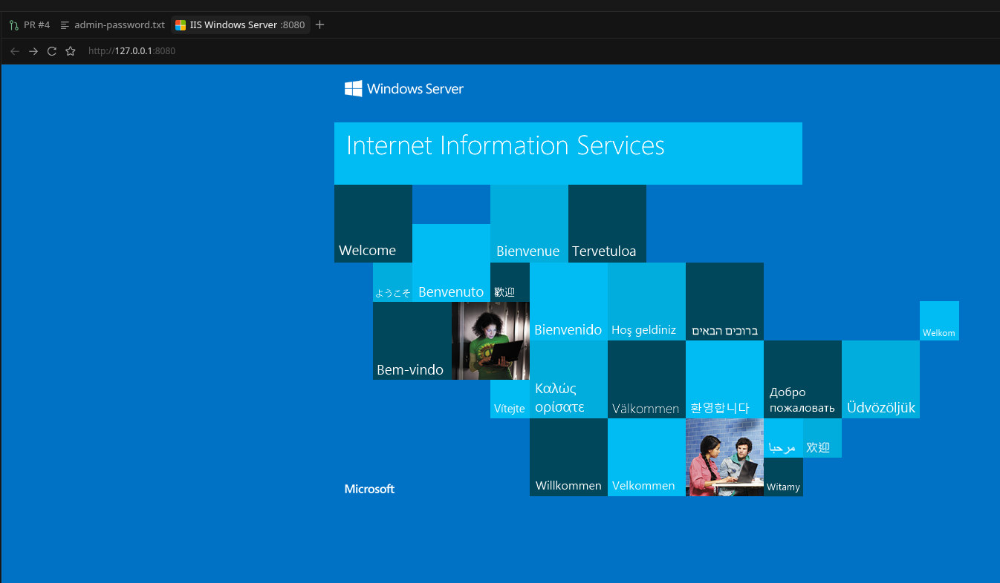

Windows Server runs on kcore as a normal VM. The guest disk is built once, outside the cluster, from installation media you are licensed to use. The node then boots that disk on Cloud Hypervisor. Three things have to be true or Windows stops at the boot manager: the kcore ISO must include the VM module, every guest must get Hyper-V CPU enlightenments, and the uploaded image must already contain virtio drivers.
The disk recipe is kcorehypervisor/windows-guest. It installs Server 2022 under QEMU with virtio-win 0.1.240, turns on the serial console (SAC) and OpenSSH, and leaves a raw disk. Newer virtio-win builds fail on Cloud Hypervisor. The recordings below are the kcore side: build the ISO, activate the CPU flag, create the VM.
1. Build the kcore ISO
The installer ISO is a NixOS image. It copies the ch-vm module onto the node,
including the Cloud Hypervisor unit that every VM uses. Build it from a checkout of kcore:
nix build .#nixosConfigurations.kcore-iso.config.system.build.isoImageThe result is a bootable ISO with volume id KCORE.
2. Activate the Windows CPU flag
Cloud Hypervisor does not boot Windows reliably unless the CPU line includes
kvm_hyperv=on. Linux guests tolerate that flag, so kcore sets it on every VM
rather than making it a per-guest switch. The same unit allows 15 minutes for the first
copy of the image onto an LVM or ZFS volume. A Windows qcow2 is larger than the default
90 second start timeout, and a killed copy used to be skipped on the next start because
the volume already existed.
The lines live in modules/ch-vm/vm-service.nix. After the node has that file,
nixos-rebuild switch restarts the VM unit with the new command line.
3. Create the Windows VM
Upload the qcow2 from the recipe, then create the VM. --storage-size-bytes is
the virtual size of the disk (40 GiB here), not the size of the compact file. LVM converts
that qcow2 to a raw volume before Cloud Hypervisor opens it. The guest address on a NAT
network is reachable from the node. kctl console is the serial port, and SAC
comes up once Windows has started.
kctl --node 192.168.40.107:9091 node upload-image \
-f windows-server-2022.qcow2 \
--name windows-server-2022.qcow2 \
--format qcow2
kctl create vm win-01 \
--cpu 2 --memory 4G --network default \
--storage-backend lvm --storage-size-bytes 42949672960 \
--target-node node-107 \
--image-path /var/lib/kcore/images/windows-server-2022.qcow2 \
--image-format qcow24. IIS from the command line
IIS is an inbox feature. From an Administrator command prompt on the guest:
powershell -Command "Install-WindowsFeature Web-Server -IncludeManagementTools"
The page below is the stock IIS welcome site. The workstation cannot open the guest
address directly, so the browser is pointed at a port forward through the node
(ssh -N -L 8080:<guest-ip>:80 root@<node>).
